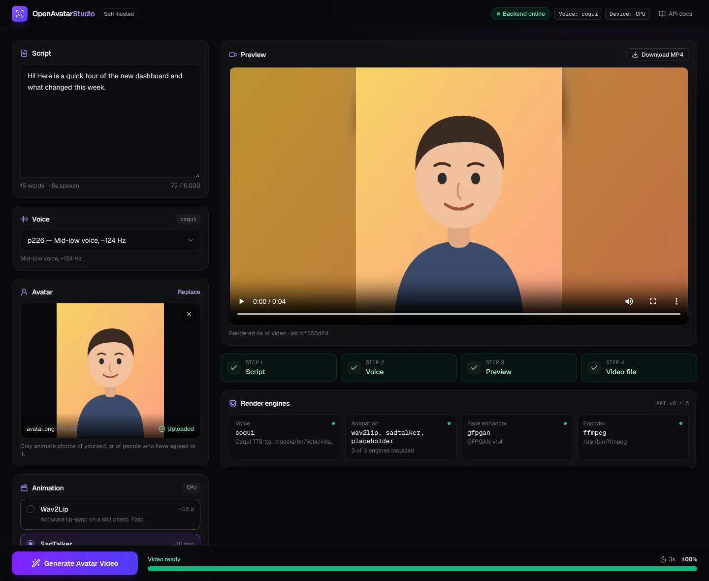
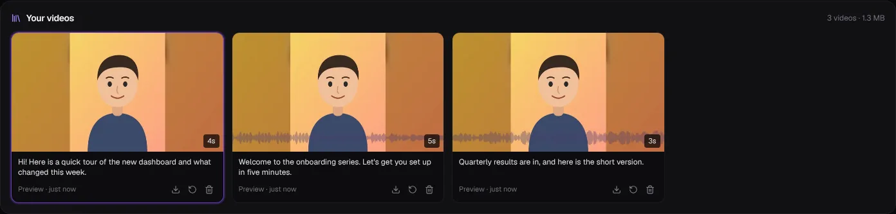
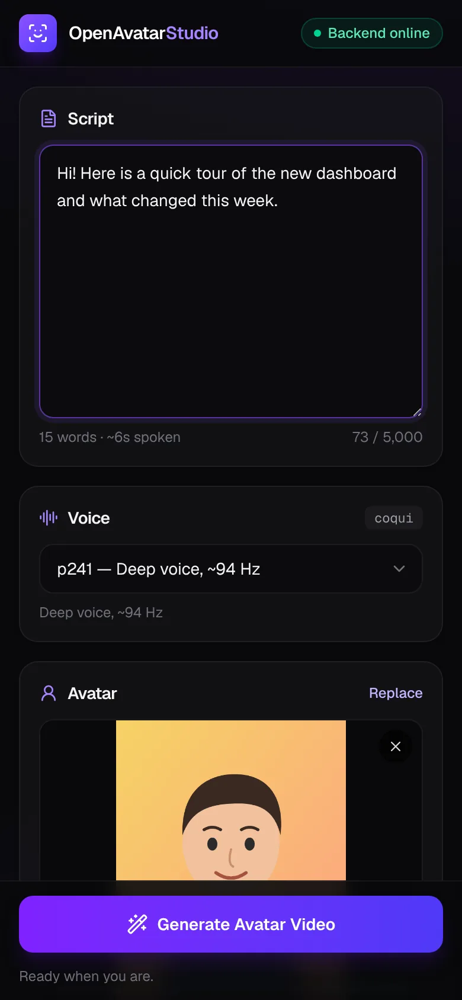

AI avatar videos, on your own machine
Type a script, pick a voice and upload a portrait. OpenAvatarStudio turns it into a talking-head video using open models for speech, lip-sync and face animation, all running on your own computer.
No hosted demo. The studio needs Python and several gigabytes of AI models, so it runs on your computer or server rather than on this website. This page shows what it does and how to set it up.

How it works
Every video goes through the same pipeline, with live progress in the dashboard.
- Script
Write what the avatar should say, up to 5,000 characters.
- Voice
Coqui TTS speaks it offline. Six curated voices, or any of 108; ElevenLabs works too.
- Animate
Wav2Lip lip-syncs the photo, or SadTalker animates the whole face with blinks and head motion.
- Video
Optional GFPGAN face enhancement, then a 1280×720 MP4 ready to download.
What's inside
A Next.js dashboard and a FastAPI backend that orchestrates open-source models.
Private by design
Scripts, photos and videos stay on your machine (unless you opt into ElevenLabs voices). No accounts, no per-minute pricing.
Choose per video
Fast mouth-only lip-sync or full-face animation, with a render-time estimate before you start.
Sharper faces
GFPGAN restores eyes, teeth and lips that lip-sync models render softly.
Video library
Every render is saved with a poster frame. Replay, download, render again or delete.
Queue and cancel
Line up several videos while one renders, and cancel any of them within seconds.
One-command setup
One script per engine installs it at a pinned version and downloads its models; the large weights are checksum-verified.


Engines, speed and licences
Times were measured on a 4-core CPU without a GPU. With an NVIDIA GPU, PyTorch uses it automatically and the heavy engines run far faster. Check each licence before any commercial use.
| Engine | What it does | 10-second clip on CPU | Licence |
|---|---|---|---|
| Coqui TTSVCTK VITS | Offline speech in 108 English voices | ~3 s | Apache-2.0 |
| Wav2Lip | Lip-sync on a still photo | ~20 s | Non-commercial |
| SadTalker | Whole-face animation: blinks, expressions, head motion | ~16 min | Apache-2.0 |
| GFPGANoptional | Face restoration on every frame | ~8 min extra | Apache-2.0, with NVIDIA-licensed parts |
Run it yourself
The dashboard starts right away with built-in placeholder engines. Add the real ones with one script each.
# get the code and start the dashboard (http://localhost:3000) git clone https://github.com/Kevdogg05/kevdogg05.github.io.git cd kevdogg05.github.io ./dev.sh # add real engines, then restart ./dev.sh sudo apt install espeak-ng # macOS: brew install espeak-ng backend/scripts/setup_coqui.sh # voices backend/scripts/setup_wav2lip.sh # fast lip-sync backend/scripts/setup_sadtalker.sh # whole-face animation (GPU recommended) backend/scripts/setup_gfpgan.sh # face enhancement
Needs Node.js 20+ and Python 3.10+, on Linux, macOS or WSL. The full setup, configuration and API reference are in the README.